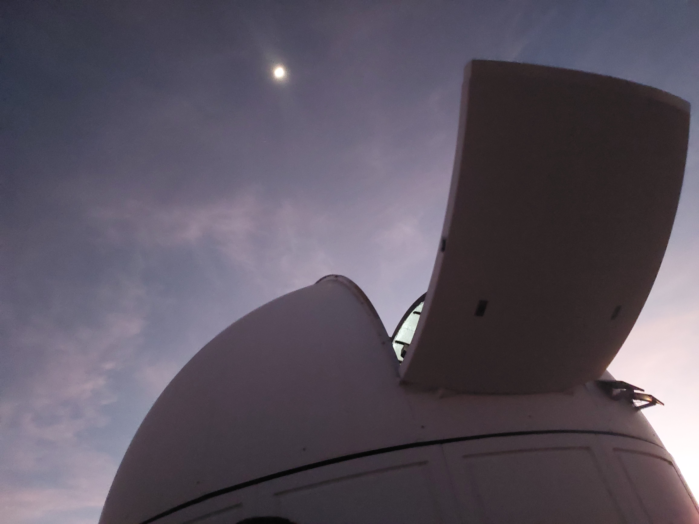
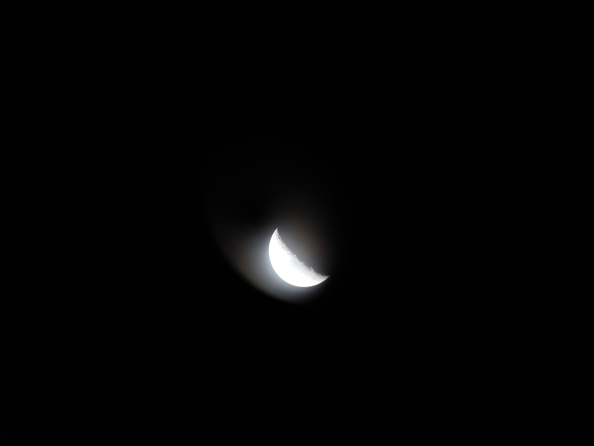

Interesses
Desde cedo sempre fui curiosa e gostei de entender e estudar coisas novas, em especial sobre matemática e ciência, e sempre tive um apreço especial por astronomia.
-

-

Foto que tirei em uma visita ao Observatório Astronômico do Sertão de Itaparica, que fica em Itacuruba-PE e é usado para pesquisas sobre asteroides
Foto da lua que tirei através das lentes de um telescópio.
Hobbies
Gosto muito de fazer crochê, bordar e desenhar no meu tempo livre, inclusive, me arrisquei em fazer a arte de fundo desse site! :)